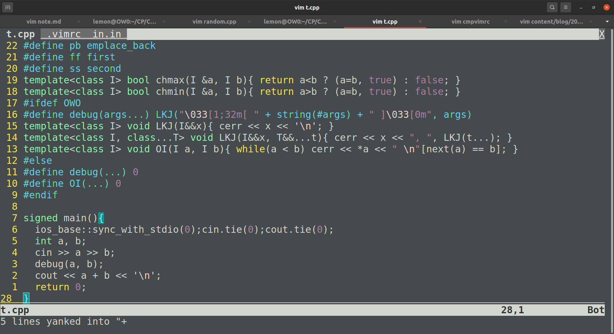

為了明天的 APCS 來複習一下模板，順便放一個備忘錄。
vimrc
1
2
3
4
5
|
sy on
se nu ru rnu cin cul sc so=4 ls=2 bs=2 ts=2 sw=2
inoremap {<CR> {<CR>}<ESC>O
map <F7> :w<CR>:!g++ "%" -o run -DOWO -fsanitize=undefined<CR>
map <F8> :!cat in.in && echo ------------ && ./run < in.in<CR>
|
想知道這些簡寫是啥，可以參考這裡。
基本的功能都有了，第三、四行字元數還剛剛好的一樣。
用完之後本機長的像這樣：

因為 Ubuntu 本身的 colorscheme 還不錯所以就不調整了。
（是說如果終端機視窗背景設定是半透明的，截圖的 .png 檔也會是半透明的，超酷）
C++ template
1
2
3
4
5
6
7
8
9
10
11
12
13
14
15
16
17
18
19
20
21
22
23
24
25
26
27
28
|
// Knapsack DP is harder than FFT.
#include<bits/stdc++.h>
using namespace std;
typedef long long ll; typedef pair<int, int> pii;
#define AI(x) begin(x),end(x)
#define pb emplace_back
#define ff first
#define ss second
template<class I> bool chmax(I &a, I b){ return a<b ? (a=b, true) : false; }
template<class I> bool chmin(I &a, I b){ return a>b ? (a=b, true) : false; }
#ifdef OWO
#define debug(args...) LKJ("\033[1;32m[ " + string(#args) + " ]\033[0m", args)
template<class I> void LKJ(I&&x){ cerr << x << '\n'; }
template<class I, class...T> void LKJ(I&&x, T&&...t){ cerr << x << ", ", LKJ(t...); }
template<class I> void OI(I a, I b){ while(a < b) cerr << *a << " \n"[next(a) == b], ++a; }
#else
#define debug(...) 0
#define OI(...) 0
#endif
signed main(){
ios_base::sync_with_stdio(0);cin.tie(0);cout.tie(0);
int a, b;
cin >> a >> b;
debug(a, b);
cout << a + b << '\n';
return 0;
}
|
主要就 #define 一些常用的關鍵字，debug 函式（有顏色喔！），還有 ZCK 最愛的 chmin & chmax。
那個 ch 就是唸作「取」沒錯喔 XD
一些給自己的注意事項
- 早睡早起，健康破台
- 記得生測資檢查，APCS 是後測，WA 總比 FST 好。
- 不要急，有兩個半小時慢慢寫。
- 像生測資一樣檢查所有 Corner Case。
- 記得 DP 是個好用的工具。
- GLHF